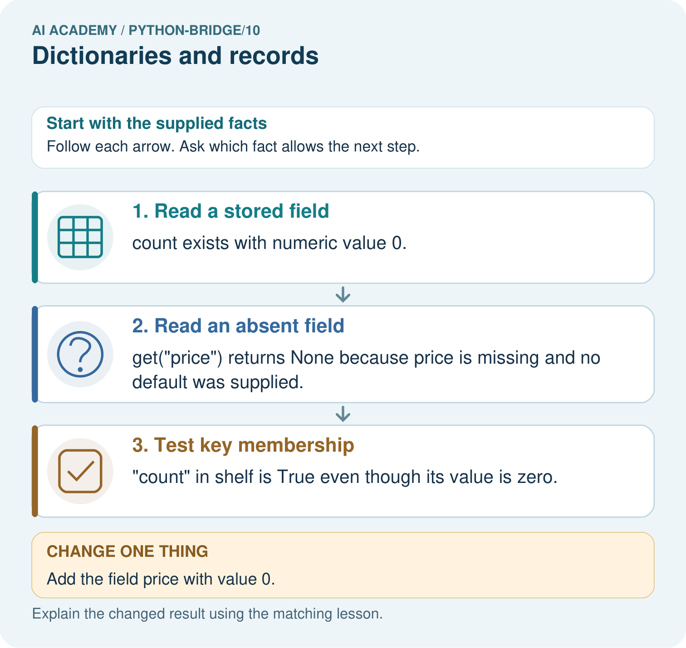

AI Academy · Python readiness bridge · Student lesson
Dictionaries and records
Learn to understand, design, build, test and explain AI systems responsibly.
Project: Python readiness portfolio
Before you start
What does remaining(8, 3) return when its body returns capacity - used?
Plan time to read, investigate and explain. Keep predictions separate from observations.
Student lesson · 1 of 17
Your mission
Your learning target
I can read and update named dictionary fields.
I can connect a record to a function call.
I can distinguish missing fields from zero values.
Remember before reading
Close your notes first. A rough first answer helps us choose the right starting point; it is not a score for your ability.
Without opening the old lesson, explain one key idea from Return values and local state. Give an example and a mistake that the idea helps you avoid.
Without opening the old lesson, explain one key idea from Lists and indexing. Give an example and a mistake that the idea helps you avoid.
Without opening the old lesson, explain one key idea from Boolean conditions. Give an example and a mistake that the idea helps you avoid.
After trying, check the relevant lesson or ask your teacher. Change the part of your explanation that the evidence shows was wrong.
This week you will practise:
Read and update named dictionary fields
Connect a record to a function call
Distinguish missing fields from zero values
Retrieve what you already know
What does remaining(8, 3) return when its body returns capacity - used?
This week’s end goal
Trace dictionaries and records and explain the changed program before running it.
Student lesson · 2 of 17
Notice the evidence
A fictional cupboard record has a name, capacity and used count. A list asks us to remember positions. Named fields make the intended meaning visible. Our schema requires name as text and capacity and used as nonnegative integers, with used no greater than capacity.
Student lesson · 3 of 17
See how it works
cupboard = {"name": "Blue", "capacity": 12, "used": 4}
def remaining(capacity, used):
return capacity - used
print(remaining(cupboard["capacity"], cupboard["used"]))
cupboard["used"] = 6
print(remaining(cupboard["capacity"], cupboard["used"]))Follow the evidence
Square brackets look up the value for a key. The quoted key "used" is text; its value is an integer. Assigning to an existing key replaces that field. Other fields remain the same. Dictionary syntax does not enforce our schema: the programmer must check it.
Connect the picture and the explanation
Point to the input, the deciding step and the result in this week’s visual. Explain the same step in ordinary words. A picture helps when you can say what each part represents.
Student lesson · 4 of 17
Compare the cases
Compare a familiar case with a changed case
Change the Red record used to 9. State remaining spaces and whether capacity changes.
Change one thing in the pictured case
Change: Add the field price with value 0.
Prediction: The price lookup now returns 0 instead of None.
Reason: A recorded zero is a present value, whereas the earlier lookup had no field.
Student lesson · 5 of 17
Words that unlock the idea
| Word | Meaning |
|---|---|
| Dictionary | A mapping from unique keys to values |
| Key | A name used to look up a value |
| Record | Related fields describing one item |
| KeyError | The error from looking up an absent dictionary key |
Student lesson · 6 of 17
Follow a worked example
Learn from the worked case
Cover the result before checking it. Say what is given, choose the procedure, and follow one step at a time. Then uncover the result and explain your first mismatch. Ask why a step is allowed, not only what number it produces.
A pictorial worked case: Dictionaries and records
A zero field is still present. A dictionary record describes a shelf. The program distinguishes missing data from an actual zero.
The facts we will use
Python 3: shelf={"count":0,"name":"Atlas"}; print(shelf["count"]); print(shelf.get("price")); print("count" in shelf).

Read the picture one step at a time
Why this result follows
Dictionary keys name fields. Presence is different from truthiness of a value; a measured zero should not be discarded as if the field were absent.
What this example does not establish
None is also a possible explicitly stored value; real record contracts must define how missing and null values are represented.
Read the labelled picture: Predict all three original outputs. Explain the difference between count=0 and missing price, then predict the lookup after price=0 is added.
Change one thing: Add the field price with value 0. Predict the result before checking the explanation. What remains the same?
Student lesson · 7 of 17
Find and repair a mistake
cupboard["Used"] raises KeyError here because keys are case sensitive. Correct it to "used". Adding a new field called "Used" would create a second key and leave the original unchanged; it would not repair the intended lookup.
Locate the earliest unsupported step
The code reads record["Used"] from the Red record. Explain the error and repair it without adding a field.
Student lesson · 8 of 17
Practise together
For {"name": "Red", "capacity": 9, "used": 2}, state the keys, value of used and remaining spaces.
Practise with less help: Trace an update
Use workbook W2 for the connected example “Dictionaries and records”. First fill the input and rule boxes. Try the middle steps before asking for a hint. After a hint, try the next step yourself.
| Plan | Do | Check |
|---|---|---|
| What is given? Which rule or procedure applies? | Record each intermediate step. | Does the result follow? What remains unknown? |
Explain your trace to a partner. Your partner points to one step to check. Swap roles on the next case. Each person writes their own explanation.
Check your reasoning
Use the worked case for Dictionaries and records. Proposed explanation: “A successful run proves the conclusion”. Decide whether this explanation is supported. Point to the step or supplied fact that decides; explain your repair if needed.
Answer on your own before discussion. If you are unsure, say which step you need help with.
Explain the picture
Predict all three original outputs. Explain the difference between count=0 and missing price, then predict the lookup after price=0 is added.
This is supported practice. Keep the separately named independent case for an attempt before feedback.
Student lesson · 9 of 17
Run the investigation
Predict, investigate and preserve the evidence
Change the Red record used to 9. State remaining spaces and whether capacity changes.
cupboard = {"name": "Blue", "capacity": 12, "used": 4}
def remaining(capacity, used):
return capacity - used
print(remaining(cupboard["capacity"], cupboard["used"]))
cupboard["used"] = 6
print(remaining(cupboard["capacity"], cupboard["used"]))| Record | Your evidence |
|---|---|
| Given input and fixed rule | |
| Prediction before checking | |
| Actual result, or “not run” | |
| First mismatch and one explanation | |
| Boundary or missing input and expected response |
On paper, trace the supplied procedure. If code is provided, predict before running it in a local practice file. Never write an expected answer as though it were an observed run.
Plan → try → check
Before trying: what do I expect, and why? While trying: which step could first go wrong? Afterwards: what did I actually observe, and what should change? Keep “not run” if you only traced the procedure.
Student lesson · 10 of 17
Build your understanding
Explain → apply → challenge
For {"name": "Red", "capacity": 9, "used": 2}, state the keys, value of used and remaining spaces.
The code reads record["Used"] from the Red record. Explain the error and repair it without adding a field.
A record has capacity 3 and used 4. It gives -1 spaces without an error. Should it be accepted? Explain.
Student lesson · 11 of 17
Connect your project
Add a labelled dictionaries and records evidence sheet to Python readiness portfolio. Show how you can read and update named dictionary fields. Use the supplied fictional case and keep its inputs, intermediate steps, calculation or prediction, and limitation. Connect this record to last week’s record; a matching answer without a trace is insufficient.
| Project evidence | Record |
|---|---|
| Component and version | |
| Inputs permitted at prediction time | |
| Trace and comparison with earlier work | |
| Failure, limit and human review |
Evidence for your project
For Python readiness before the Responsible Plant Classifier, retain a trace of the values, the predicted outputs and the changed-case explanation. Use actual Python 3 results to check the prediction after reasoning first.
Student lesson · 12 of 17
Show what you know
Named fields reduce position mistakes but do not prove that a record is accurate. A capacity of 2 with used of 5 is representable in a dictionary and violates this schema.
A record has capacity 3 and used 4. It gives -1 spaces without an error. Should it be accepted? Explain.
Student lesson · 13 of 17
Study a complete case
Complete evidence record
Follow the evidence
Follow the input through the stated procedure to its result. Cover the result first, predict it, then explain every intermediate step. The text/table accompanies the figure so the example can be read without colour.
Student lesson · 14 of 17
Try a new case independently
Independent case: Read, update and pass a dictionary record
Predict the three outputs and trace the named-field update. Explain why zero and a missing count produce different results. If the condition becomes if not count, which supplied record is first handled incorrectly?
def describe(record):
count = record.get("count")
if count is None:
return "missing"
return count
record = {"count": 0}
print(describe(record))
record["count"] = 3
print(describe(record))
print(describe({}))
Attempt this case before feedback. Record any help. Earlier examples below are further practice; a case already practised with feedback cannot establish fresh transfer.
Attempt this without hints
Create a Green record with capacity 15 and used 6. Pass its fields to remaining and store the result. Update used to 10 and repeat. Predict both results.
Record support used: none, hint or teacher explanation. After feedback, a different case is needed to demonstrate independence.
Use feedback to improve
Attempt the independent case before hints. Record whether you worked alone, used a hint or followed a model. After feedback, fix the first unsupported step and explain why it changed. A later check uses a changed case, not a copied answer.
Student lesson · 15 of 17
Your lesson route
Start with this question: A zero field is still present. A dictionary record describes a shelf. The program distinguishes missing data from an actual zero.
| By the end, I can | How I will show it |
|---|---|
| Read and update named dictionary fields | Explain the deciding step, show a trace or test, and state one limit. |
| Connect a record to a function call | Explain the deciding step, show a trace or test, and state one limit. |
| Distinguish missing fields from zero values | Explain the deciding step, show a trace or test, and state one limit. |
Remember → watch and explain → try with help → investigate → try independently → keep project evidence. Your teacher may spread this lesson across several classes.
Keep your first prediction. Compare it with what the evidence shows and explain any change.
Student lesson · 16 of 17
Finish and return
Close your notes. Explain this goal in your own words: Read and update named dictionary fields
If you are unsure, return to the worked picture and explain one arrow. If you are ready, change an input or assumption and justify your prediction.
Save your workbook evidence. At the next review, try a different case before opening your old answer.
Student lesson · 17 of 17
Supported practice, repair and portfolio
Use this supported practice once, in the browser or on paper. Keep the reserved independent assessment for a separate first attempt before teacher feedback.
A zero field is still present. A dictionary record describes a shelf. The program distinguishes missing data from an actual zero.
Practice 1: explain the deciding evidence
Which labelled step matches this detail? "count" in shelf is True even though its value is zero.
1. Test key membership
2. Read an absent field
3. Read a stored field
Hint if needed: Read the steps in the pictorial case. Match the supplied detail to the stage that performs or records it.
After your attempt, compare with the supported explanation: Test key membership "count" in shelf is True even though its value is zero. Dictionary keys name fields. Presence is different from truthiness of a value; a measured zero should not be discarded as if the field were absent.
Practice 2: explain the deciding evidence
Changed-case practice: Add the field price with value 0. Which conclusion is supported by the supplied facts?
1. The price lookup now returns 0 instead of None.
2. We can decide the result without examining the changed input or the procedure.
3. This one example guarantees correct results for every future input.
Hint if needed: Use the changed condition and the deciding step in the pictorial trace. The answer must say what follows from those facts.
After your attempt, compare with the supported explanation: The price lookup now returns 0 instead of None. A recorded zero is a present value, whereas the earlier lookup had no field.
Repair a missing building block
Review Return values and local state (python-bridge/9). Goal: Use a returned value in a later calculation. Short practice: Trace the two returned values and explain why first stays seven. What happens if the caller tries to print result directly?. Return to this week and explain what you changed.
Review Lists and indexing (python-bridge/7). Goal: Distinguish a list index from the value stored at that position. Short practice: Label the three index positions. Predict all original outputs, then name the first output and stopping point after using index 3.. Return to this week and explain what you changed.
Review Boolean conditions (python-bridge/4). Goal: Translate stated requirements into comparisons. Short practice: Give both comparison results for ages 11, 15 and 16. Which comparison rejects each outside value, and why does and matter?. Return to this week and explain what you changed.
Predict, run and debug
The browser lab lets you edit the supported Python examples already included in this lesson. Predict first, run, inspect the actual output or error, change one input, then run again. Keep code, predictions, actual results and a reasoned revision together. On paper, label your result as a trace rather than an execution.
Keep your completed work
Use Download completed work in the hosted lesson to export your answers, reflections, practice feedback and code-run evidence. Open the HTML copy to read or print it. Drafts stay in this browser when storage is available; clear drafts on a shared device.